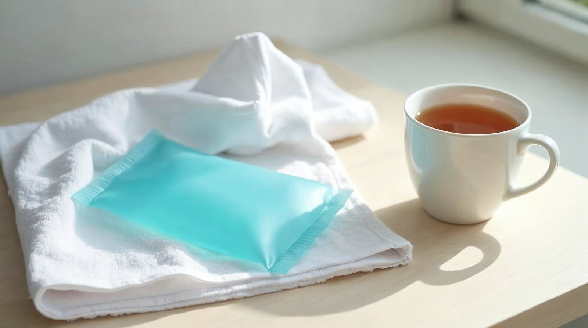
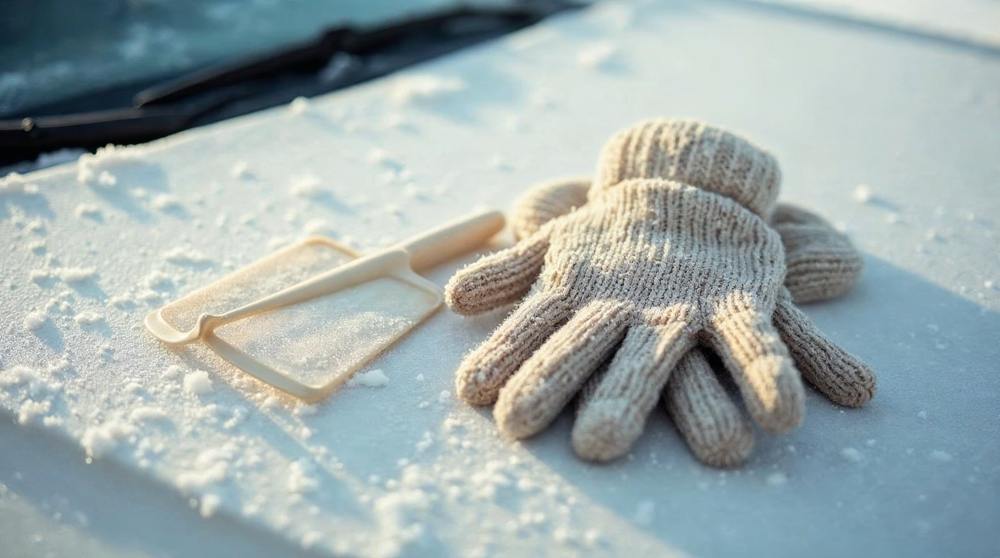
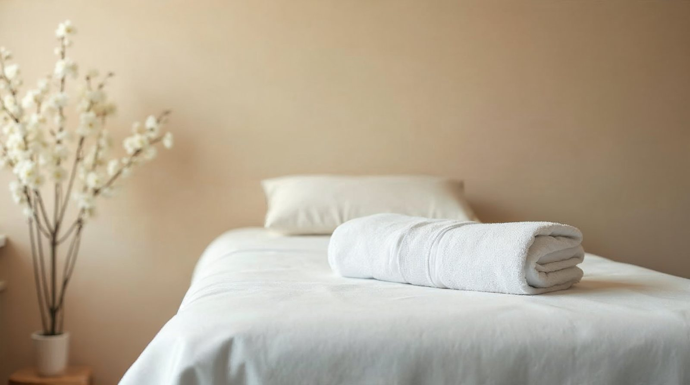
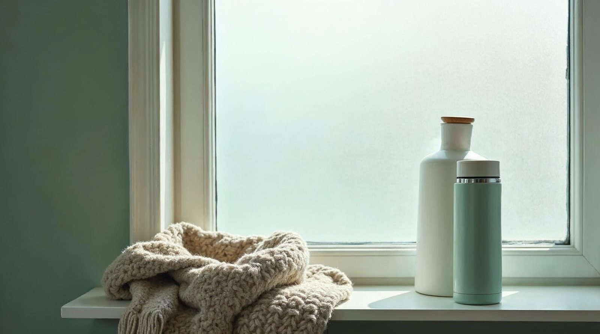
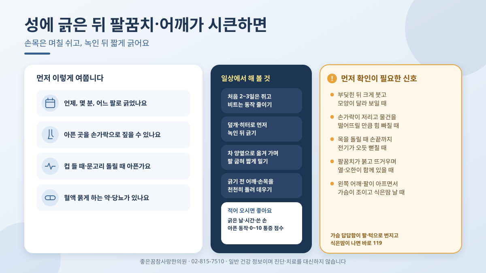

이종호 한의사 감수좋은꿈참사랑한의원 대표원장 (한의사 면허번호 19769)발행 2026-11-27 · 수정 2026-11-27
이 글의 차례
밤사이 기온이 영하로 떨어진 날, 골목에 세워 둔 차 앞유리에 하얗게 성에가 껴 있으면 마음부터 급해지죠. 출근 시간에 쫓겨 스크레이퍼로 힘껏 긁어 내고 나면, 그날 오후나 다음 날 아침 팔꿈치 바깥쪽이 시큰하고, 컵을 들거나 문고리를 돌릴 때 찌릿하며, 어깨 뒤쪽까지 뻐근해지는 분이 많아요.
원래 그럴 만해요. 스크레이퍼를 쥔 손목을 뒤로 젖힌 채 힘을 주고, 팔을 앞유리 가운데까지 쭉 뻗어 짧고 빠르게 수십 번 밀어내는 동작은 생각보다 고된 일이거든요. 팔꿈치 바깥에 붙은 손목 펴는 근육과 힘줄, 그리고 팔을 들어 버티는 어깨 뒤쪽 근육에 짧은 시간 큰 부담을 주는 거예요.
그러니까 사실은 '얼마나 오래 했느냐'보다 '얼마나 급하게 했느냐'를 보셔야 해요. 몇 분이면 끝나는 일이라 가볍게 보기 쉽지만, 언 몸으로 서둘러 힘을 쓰면 짧고 센 운동을 한 것과 비슷하거든요.
대개는 2~3일 동안 손목을 젖혀 쥐고 비트는 동작을 줄여 그 부위를 쉬게 하고, 다음 성에부터는 히터로 먼저 녹인 뒤 몸을 옮겨 가며 짧게 긁는 순서로 바꾸는 것만으로도 부담을 꽤 덜 수 있어요.
다만 넘어지거나 부딪힌 뒤 팔꿈치가 붓고 모양이 달라 보이거나, 손가락이 저리고 힘이 빠지거나, 추운 데서 힘을 쓴 뒤 왼쪽 어깨와 팔이 아프면서 가슴이 답답하고 식은땀이 난다면 근육 문제로 넘기지 말고 먼저 확인해야 해요.
왜 성에를 긁고 나면 팔꿈치 바깥과 어깨 뒤가 아플까요
- 스크레이퍼로 얼음을 밀어낼 때는 손잡이를 꽉 쥐고 손목을 손등 쪽으로 젖힌 자세로 힘을 줍니다. 이 자세는 팔꿈치 바깥 튀어나온 뼈에 모여 붙는 손목 펴는 근육과 힘줄을 강하게 당겨, 흔히 테니스엘보라고 부르는 팔꿈치 바깥 통증과 같은 자리에 부담이 쌓입니다.
- 앞유리 가운데까지 닿으려면 팔을 어깨 높이 가까이 들어 앞으로 쭉 뻗은 채 버텨야 합니다. 팔이 몸에서 멀어질수록 어깨 뒤쪽과 날개뼈 주변 근육이 받는 힘이 커져, 몇 분만 긁어도 어깨 뒤가 묵직해집니다.
- 차가운 근육과 힘줄은 늘어나는 정도가 줄고 뻣뻣해져, 같은 동작이라도 따뜻할 때보다 작은 손상이 생기기 쉽습니다. 이른 아침 집에서 막 나와 몸이 덜 풀린 상태로 바로 힘을 쓰는 것도 부담을 키웁니다.
- 얼어붙은 바닥에서 미끄러지지 않으려고 다리와 허리에 힘을 준 채 상체만 비틀어 긁게 됩니다. 하체로 받쳐 주지 못하니 팔 힘에만 기대 동작이 거칠어지고, 옆구리와 허리 한쪽이 함께 결리는 분도 있습니다.
- 출근 시간에 쫓기면 얼음이 녹기를 기다리지 않고 단단한 얼음을 세게, 빠르게 긁게 됩니다. 힘을 주는 횟수와 세기가 한꺼번에 커지는 셈입니다.
- 두꺼운 장갑을 낀 채 미끄러운 손잡이를 쥐면 놓치지 않으려고 손에 더 힘이 들어가고, 손잡이가 짧은 도구일수록 팔 전체가 아니라 손목만 꺾어 긁게 됩니다.
- 평소 마우스 작업이나 장바구니 들기, 요리처럼 손목을 많이 쓰는 분은 이미 그 자리가 지쳐 있어, 겨울 아침 몇 번의 성에 긁기가 숨어 있던 통증을 드러내는 계기가 되기도 합니다.
- 한의학에서는 찬 기운이 근육과 경락에 머물러 기혈의 흐름이 막히면 저리고 당기는 통증이 생긴다고 보아 이를 비증의 하나로 설명하기도 합니다. 팔꿈치 바깥은 손에서 어깨로 이어지는 수양명대장경이 지나는 자리이고 곡지 같은 혈자리가 있는 곳이라, 이 부근의 뭉침과 차가움을 함께 살펴봅니다.
먼저 이렇게 여쭙니다
- 성에를 긁은 날이 언제이고, 그날 몇 분 정도 긁었는지, 어느 쪽 팔로 했는지 여쭙니다.
- 아픈 자리를 손가락 하나로 짚어 보실 수 있는지, 팔꿈치 바깥 뼈 바로 아래인지, 팔뚝 위쪽 근육인지, 어깨 뒤나 날개뼈 쪽인지 여쭙니다.
- 손등이 위로 향하게 컵이나 주전자를 들 때, 문고리나 병뚜껑을 돌릴 때, 악수할 때처럼 어떤 동작에서 가장 아픈지 여쭙니다.
- 팔을 머리 위로 올리거나 뒷주머니에 손을 넣을 때, 아픈 쪽을 깔고 옆으로 누울 때 어깨가 아픈지 여쭙니다.
- 넘어지거나 부딪힌 일은 없었는지, 붓기나 열감, 멍이 있는지 여쭙니다.
- 손가락 저림이나 힘 빠짐, 목을 움직일 때 팔로 뻗치는 느낌이 있는지 여쭙니다.
- 평소 하는 일과 손목을 많이 쓰는 취미, 예전에도 팔꿈치나 어깨가 아팠던 적이 있는지 여쭙니다.
- 혈압약이나 혈액을 묽게 하는 약, 당뇨 같은 지병이 있는지와, 긁던 날 가슴 답답함이나 숨참이 있었는지도 함께 여쭙니다.

일상에서 먼저 해 볼 수 있는 것
처음 2~3일: 쥐고 비트는 동작 줄이기
- 손등을 위로 한 채 무거운 것을 드는 동작, 걸레나 빨래를 비틀어 짜는 동작, 병뚜껑을 세게 돌리는 동작을 며칠 줄입니다. 컵이나 냄비는 손바닥이 위를 향하게 받쳐 들거나 두 손으로 듭니다.
- 팔꿈치 바깥이 화끈거리고 부은 느낌이 있다면 수건으로 싼 얼음주머니를 10~15분 대고, 하루 두세 번 반복합니다. 붓기와 열감 없이 뻣뻣함이 주로라면 따뜻한 찜질이 더 편할 수 있습니다. 어느 쪽이든 피부에 직접 대지 않고, 감각이 둔한 분은 시간을 더 짧게 합니다.
- 아프다고 팔을 아예 쓰지 않고 몸에 붙이고만 있으면 오히려 어깨가 굳기 쉽습니다. 아프지 않은 범위에서 팔을 천천히 앞뒤로 흔들어 줍니다.
- 잠잘 때 아픈 쪽 어깨를 깔고 눕지 않도록 반대쪽으로 눕거나, 바로 누워 아픈 팔 아래에 얇은 베개를 하나 받칩니다.
3일째 이후: 가볍게 풀기
- 손목 펴는 근육 늘이기: 아픈 팔을 앞으로 뻗어 손등이 위를 향하게 한 뒤, 반대 손으로 손등을 살며시 아래로 눌러 팔뚝 위쪽이 당기는 느낌이 들면 15~20초 머뭅니다. 세 번 반복하고, 찌릿한 통증이 오기 전에 멈춥니다.
- 어깨 뒤 풀기: 아픈 팔을 가슴 앞으로 가로질러 놓고, 반대 팔로 팔꿈치 위쪽을 살며시 당겨 15~20초 머뭅니다.
- 날개뼈 모으기: 의자에 바르게 앉아 양 날개뼈를 등 가운데로 5초 모았다가 풀기를 10번 합니다.
- 따뜻한 물로 샤워한 뒤나 잠자기 전에 하면 근육이 덜 뻣뻣한 상태에서 풀 수 있습니다.
다음 성에부터 바꾸는 순서
- 전날 밤 앞유리에 성에 방지 덮개나 두꺼운 천을 덮고 양쪽 문틈이나 와이퍼 아래에 끼워 둡니다. 아침에 덮개만 걷으면 긁을 양이 크게 줄어듭니다.
- 아침에는 시동을 걸고 앞유리 김 서림 제거 기능과 히터를 켠 뒤, 그동안 장갑을 끼고 짐을 싣거나 차 주변의 눈을 털며 몇 분 기다립니다. 동네에 공회전 제한 안내가 있다면 그 범위 안에서 짧게 합니다.
- 얼음 가장자리가 녹아 들뜨기 시작하면 그때 긁습니다. 이미 들뜬 얼음은 적은 힘으로도 밀려납니다.
- 뜨거운 물을 앞유리에 붓지 않습니다. 언 유리에 갑자기 뜨거운 물이 닿으면 금이 갈 수 있고, 흘러내린 물이 바닥에서 다시 얼어 미끄러지기 쉽습니다.
- 손잡이가 긴 스크레이퍼나 눈솔이 달린 도구를 쓰고, 한 손으로 손목만 꺾기보다 두 손으로 잡아 팔과 몸통을 함께 씁니다.
- 앞유리 가운데까지 팔을 쭉 뻗지 말고, 운전석 쪽 절반과 조수석 쪽 절반을 나눠 차 양옆으로 몸을 옮겨 가며 긁습니다. 팔꿈치는 살짝 굽혀 몸 가까이에서 짧게 밉니다.
- 언 와이퍼를 억지로 떼거나 얼어붙은 채로 작동시키지 않습니다. 고무가 상하기 쉽고, 떼어 내는 순간 손목에도 갑자기 힘이 들어갑니다.
- 긁기 전에 어깨를 크게 다섯 번 돌리고 손목을 천천히 돌려 몸을 데운 뒤 시작합니다.
- 발밑이 얼어 있다면 미끄럼 방지 밑창의 신발을 신고, 한 손은 차체에 가볍게 대어 균형을 잡은 상태에서 긁습니다.
하루 전체에서 손목 쉬게 하기
- 마우스와 키보드를 쓸 때 손목이 뒤로 꺾이지 않게 손목 받침을 쓰고, 50분마다 손을 털고 팔을 아래로 늘어뜨려 쉬게 합니다.
- 장바구니나 무거운 가방은 손가락에 걸어 들기보다 어깨에 메거나 바퀴 달린 끌개를 씁니다.
- 휴대폰은 한 손으로 오래 쥐고 엄지로 넘기기보다, 책상에 올려 두거나 두 손으로 잡고 봅니다.

상황별 예시
- 예를 들어 상도동 언덕 골목에 차를 세워 두는 직장인이 한파가 온 첫날 아침, 지각할까 봐 오른손 하나로 짧은 스크레이퍼를 쥐고 5분 넘게 앞유리를 세게 긁은 뒤 오후부터 커피잔을 들 때마다 팔꿈치 바깥이 찌릿한 경우, 2~3일은 컵을 두 손으로 들고 비트는 동작을 줄이며, 그날 밤부터 앞유리 덮개를 씌우고 아침에는 히터를 먼저 켜 두는 순서로 바꿔 봅니다.
- 예를 들어 새벽 장사를 준비하는 자영업자가 화물차 앞유리와 옆 거울의 얼음까지 매일 긁고, 이어서 무거운 상자를 손등이 위로 향하게 들어 옮기다 보니 일주일째 팔꿈치 바깥과 팔뚝이 묵직한 경우, 성에 긁기 하나보다 하루 내내 이어지는 손목 사용이 쌓였을 수 있어 상자를 드는 손 방향과 쉬는 시간까지 함께 정리해 봅니다. 2주가 넘도록 그대로라면 상담을 받아 봅니다.
- 예를 들어 50대 운전자가 차 지붕에 쌓인 눈까지 치우려고 팔을 머리 위로 뻗어 여러 번 쓸어내린 뒤, 팔을 들어 올릴 때 어깨 바깥과 뒤쪽이 걸리듯 아프고 밤에 그쪽으로 누우면 깨는 경우, 팔을 머리 위로 드는 동작을 며칠 줄이고 아픈 쪽을 깔고 눕지 않도록 베개를 받칩니다. 팔이 특정 높이에서 더 올라가지 않거나 밤 통증이 계속되면 어깨 힘줄 상태를 확인해 봅니다.
- 예를 들어 성에를 긁고 차에 오른 뒤 왼쪽 어깨와 팔이 무겁게 아프면서 가슴이 조이듯 답답하고 식은땀이 나는 경우에는 팔 근육 문제로 여기지 말고 바로 응급실로 갑니다. 추운 아침에 갑자기 힘을 쓰면 심장에 부담이 커질 수 있습니다.
자주 하는 오해
- 팔꿈치 바깥 통증은 테니스를 치는 사람에게만 생긴다고 여기기 쉽지만, 손목을 젖혀 쥐고 힘을 주는 동작이면 성에 긁기, 걸레 짜기, 망치질, 프라이팬 들기 같은 일상 동작으로도 생길 수 있습니다.
- 아프면 꽉 주무르고 세게 늘여야 빨리 풀린다고 생각하는 분이 많습니다. 처음 며칠은 힘줄이 예민한 시기라 세게 누르거나 무리하게 늘이면 더 시큰해질 수 있어, 쉬게 하는 쪽을 먼저 합니다.
- 뜨거운 물을 부으면 성에가 금방 녹으니 편하다고 여기기 쉽지만, 유리에 금이 가거나 바닥이 다시 얼어 넘어질 수 있습니다.
- 파스를 붙이면 그 동작을 계속해도 괜찮다고 생각하는 분도 있습니다. 통증이 덜 느껴지는 것과 부담이 줄어든 것은 다르니, 원인이 된 동작부터 줄입니다.
- 며칠 쉬어서 덜 아프면 다 끝났다고 여기기 쉽지만, 같은 방식으로 다시 긁으면 다음 한파 때 또 반복될 수 있어 긁는 순서와 도구를 바꿔 두는 편이 좋습니다.
스스로 점검해 보세요
- 성에를 긁을 때 한 손으로 손목만 꺾어 세게 미는 편이다.
- 앞유리 가운데까지 팔을 쭉 뻗어 한자리에 서서 다 긁는다.
- 시동을 걸자마자, 얼음이 녹기 전에 바로 긁기 시작한다.
- 손등을 위로 한 채 컵이나 주전자를 들 때 팔꿈치 바깥이 찌릿하다.
- 병뚜껑을 열거나 걸레를 짤 때 팔꿈치 바깥이 아프다.
- 팔을 머리 위로 들거나 아픈 쪽으로 누우면 어깨 뒤가 아프다.
- 평소 마우스 작업처럼 손목을 많이 쓰는 일을 하루 몇 시간씩 한다.

한의원에서 함께 살필 수 있는 경우
- 쥐는 동작을 줄였는데도 1~2주 넘게 팔꿈치 바깥 통증이 그대로인 경우
- 아침에 팔꿈치가 뻣뻣하고 컵을 들 때마다 찌릿함이 반복되는 경우
- 팔을 들어 올리거나 옆으로 누울 때 어깨 통증 때문에 잠을 설치는 경우
- 겨울만 되면 팔과 어깨가 시리고 뭉치는 느낌이 해마다 반복되는 경우
좋은꿈참사랑한의원에서는 첫 방문 때 맥부터 짚어 보고, 성에를 긁은 날의 상황과 아픈 동작, 평소 하는 일과 손목을 쓰는 습관을 차례로 여쭙습니다. 이어 혀와 배를 함께 살펴 몸이 찬 편인지, 피로가 쌓여 있는지 확인합니다. 이어 아픈 자리를 직접 눌러 보고, 손목을 젖히거나 손가락에 힘을 줄 때, 팔을 들어 올릴 때 어디가 아픈지 동작으로 확인합니다.
힘줄과 주변 조직의 상태를 더 보아야 할 때는 초음파로 아픈 쪽과 반대쪽을 비교해 보기도 합니다. 그 결과에 따라 침과 IS400을 이용한 온열 치료 등을 상의하고, 몇 주 넘게 이어지는 힘줄 통증이라면 체외충격파(제우스·한일티엠)를 고려할지 함께 이야기합니다.
장비마다 맞는 부위와 주의할 점이 달라 미리 여쭙고, 건강보험 적용 여부는 방문 전 전화로 확인해 주세요. 뼈가 다쳤을 가능성이 있거나 손 저림이 목에서 오는 것으로 보이면 영상 검사가 가능한 병원 진료를 먼저 권해 드립니다. 다시 오시면 지난번 정한 쉬는 방법과 긁는 순서를 해 보셨는지, 어떤 동작에서 아직 아픈지를 이어서 여쭙습니다.

얼마나 지켜보고 언제 상담할까요
- 단순히 근육이 놀란 경우라면 쥐고 비트는 동작을 줄였을 때 며칠에서 1~2주 사이 차츰 가라앉는 경우가 많습니다.
- 2주가 지나도 컵을 들 때마다 찌릿하거나 아침마다 팔꿈치가 뻣뻣하다면 상담을 받아 보세요. 힘줄 통증은 오래 끌수록 작은 동작에도 예민해지는 경향이 있습니다.
- 어깨는 팔을 들어 올리는 범위가 점점 줄거나, 밤에 아파서 깨는 일이 일주일 넘게 이어지면 확인해 봅니다.
- 진료 시간은 평일 09:30~20:00(점심 13:00~14:00), 토·일·공휴일 09:30~15:00(점심시간 없음)이라 출근 전후나 주말에 맞춰 볼 수 있습니다. 접수 마감 시각은 방문 전 전화로 확인해 주세요.
- 아래 신호가 있으면 지켜보지 말고 먼저 진료를 받습니다.
이렇게 기록해 오시면 상담이 쉬워집니다
팔꿈치 통증은 "언제부터였더라" 하고 헷갈리기 쉬워요. 성에를 긁은 날, 김장한 날, 짐을 옮긴 날이 겹치면 더 그렇죠. 그래서 날짜와 동작을 같이 적어 두시면 어디서 온 통증인지 가려 보기가 훨씬 쉽거든요.
- 성에를 긁은 날과 긁은 시간, 사용한 도구(손잡이 길이), 어느 손으로 했는지
- 아픈 자리를 표시한 사진이나 그림
- 가장 아픈 동작 세 가지와 0~10 통증 점수
- 아침과 저녁 가운데 언제 더 뻣뻣한지, 밤에 깨는지
- 평소 하는 일, 하루 마우스·휴대폰 사용 시간, 손목을 많이 쓰는 취미
- 복용 중인 약과 지병(특히 혈액을 묽게 하는 약, 당뇨)
아픈 자리를 살피고 치료를 정하는 건 제가 할게요. 대신 하나만 부탁드려요. 다음에 성에가 끼는 날엔 히터로 먼저 녹인 다음 긁어 주세요. 그 몇 분이 팔꿈치한테는 꽤 큰 차이가 되거든요.
딴 건 하시던 대로 하셔도 돼요. 팔을 아예 안 쓰는 게 아니라, 손목을 젖혀 비트는 동작만 며칠 줄이면 되는 거예요. 운전도, 일도 그대로 하시면서요. 궁금한 건 그냥 편하게 물어보세요. 다음에 오시면 어떤 동작이 아직 걸리는지부터 여쭐게요.
이런 증상은 먼저 확인이 필요합니다
- 넘어지거나 부딪힌 뒤 팔꿈치나 어깨가 크게 붓고 멍이 들거나, 모양이 달라 보이거나, 팔을 거의 움직이지 못하는 경우
- 손가락이 저리거나 감각이 둔하고, 물건을 자꾸 떨어뜨릴 만큼 힘이 빠지는 경우
이런 신호가 있으면 한의원보다 가까운 병원이나 응급실을 먼저 찾으세요.
관련 글
- 장바구니를 들고 언덕길을 오르고 나면 손목과 팔꿈치가 시큰할 때는 어떻게 살피나요?
- 눈 온 다음 날 집 앞 눈을 치운 뒤 허리와 어깨가 결릴 때는 어떻게 하나요?
- 추운 날 어깨가 움츠러들고 뻐근한 것은 어떻게 살피나요?

여쭙는 것
- 성에를 긁은 날이 언제이고, 그날 몇 분 정도 긁었는지, 어느 쪽 팔로 했는지 여쭙…
- 아픈 자리를 손가락 하나로 짚어 보실 수 있는지, 팔꿈치 바깥 뼈 바로 아래인지,…
- 손등이 위로 향하게 컵이나 주전자를 들 때, 문고리나 병뚜껑을 돌릴 때, 악수할 때…
생활에서 해 볼 것
- 손등을 위로 한 채 무거운 것을 드는 동작, 걸레나 빨래를 비틀어 짜는 동작, 병뚜…
- 팔꿈치 바깥이 화끈거리고 부은 느낌이 있다면 수건으로 싼 얼음주머니를 10~15분…
- 아프다고 팔을 아예 쓰지 않고 몸에 붙이고만 있으면 오히려 어깨가 굳기 쉽습니다.…
한의원에서 함께 살필 것
- 쥐는 동작을 줄였는데도 1~2주 넘게 팔꿈치 바깥 통증이 그대로인 경우
- 아침에 팔꿈치가 뻣뻣하고 컵을 들 때마다 찌릿함이 반복되는 경우
- 팔을 들어 올리거나 옆으로 누울 때 어깨 통증 때문에 잠을 설치는 경우
먼저 확인이 필요한 신호
- 넘어지거나 부딪힌 뒤 팔꿈치나 어깨가 크게 붓고 멍이 들거나, 모양이 달라 보이거나…
- 손가락이 저리거나 감각이 둔하고, 물건을 자꾸 떨어뜨릴 만큼 힘이 빠지는 경우
한눈에 보는 표
| 구분 | 핵심 |
|---|---|
| 여쭙는 것 | 성에를 긁은 날이 언제이고, 그날 몇 분 정도 긁었는지, 어느 쪽 팔로 했는지 여쭙니다. 아픈 자리를 손가락 하나로 짚어 보실 수 있는지, 팔꿈치 바깥 뼈 바로 아래인지, 팔뚝 위쪽 근육인지, 어깨 뒤나 날개뼈 쪽인지 여쭙니다. |
| 생활에서 해 볼 것 | 손등을 위로 한 채 무거운 것을 드는 동작, 걸레나 빨래를 비틀어 짜는 동작, 병뚜껑을 세게 돌리는 동작을 며칠 줄입니다. 컵이나 냄비는 손바닥이 위를 향하게 받쳐 들거나 두 손으로 듭니다. 팔꿈치 바깥이 화끈거리고 부은 느낌이 있다면 수건으로 싼 얼음주머니를 10~15분 대고, 하루 두세 번 반복합니다. 붓기와 열감 없이 뻣뻣함이 주로라면 따뜻한 찜질이 더 편할 수 있습니다. 어느 쪽이든 피부에 직접 대지 않고, 감각이 둔한 분은 시간을 더 짧게 합니다. |
| 한의원에서 함께 살필 것 | 쥐는 동작을 줄였는데도 1~2주 넘게 팔꿈치 바깥 통증이 그대로인 경우 아침에 팔꿈치가 뻣뻣하고 컵을 들 때마다 찌릿함이 반복되는 경우 |
| 먼저 확인이 필요한 신호 | 넘어지거나 부딪힌 뒤 팔꿈치나 어깨가 크게 붓고 멍이 들거나, 모양이 달라 보이거나, 팔을 거의 움직이지 못하는 경우 손가락이 저리거나 감각이 둔하고, 물건을 자꾸 떨어뜨릴 만큼 힘이 빠지는 경우 |
자주 묻는 질문
팔꿈치 바깥이 아플 때 얼음찜질과 온찜질 중 무엇을 하나요?
화끈거리고 부은 느낌이 있는 처음 하루 이틀은 수건으로 싼 얼음주머니를 10~15분 대는 편이 편할 수 있고, 붓기 없이 뻣뻣함이 주로라면 따뜻한 찜질이 더 편할 수 있습니다. 몸의 반응을 보며 고르고, 피부에 직접 대지 않습니다.
팔꿈치 보호대를 차면 도움이 되나요?
팔꿈치 바로 아래 팔뚝을 감싸는 밴드형 보호대는 쥐는 동작을 할 때 힘줄에 걸리는 힘을 나누는 데 쓰입니다. 너무 조이면 손이 저릴 수 있어 손가락 색과 감각을 확인하고, 잘 때는 풀어 둡니다.
성에를 녹이려고 미지근한 물을 부어도 되나요?
미지근한 물이라도 언 유리 위에서는 다시 얼어 더 단단해지거나, 바닥에 흘러 빙판이 되기 쉽습니다. 덮개를 미리 덮고 히터로 녹이는 쪽이 손목과 유리 모두에 부담이 적습니다.
아픈데 운동은 계속해도 되나요?
걷기나 하체 운동처럼 팔에 부담이 적은 운동은 이어 가도 됩니다. 덤벨이나 팔굽혀펴기, 라켓 운동처럼 손목을 쥐고 버티는 운동은 통증이 가라앉을 때까지 쉬고, 다시 시작할 때는 가벼운 무게부터 합니다.
체외충격파는 바로 받을 수 있나요?
생긴 지 얼마 안 된 통증은 먼저 쉬게 하고 동작을 조절하며 지켜보는 경우가 많습니다. 몇 주 넘게 이어지는 힘줄 통증일 때 상태를 살펴 상의하며, 혈액을 묽게 하는 약을 드시거나 임신 가능성이 있다면 미리 알려 주세요. 가능한 일정과 비용은 방문 전 전화로 확인해 주세요.
좋은꿈참사랑한의원은 재진 때 지난번 이야기부터 이어서 여쭙니다. 진료시간과 예약은 오시는 길에서 확인하세요.
어디서 상담받을 수 있나요?
좋은꿈참사랑한의원은 서울 동작구 만양로2길 2 신성빌딩 3층·5층(서울 동작구 상도동, 7호선 상도역 3번 출구 근처)에 있습니다. 한의사 3명(이종호 대표원장, 조영기 수석진료원장, 정원영 진료원장)이 진료합니다. 진료시간은 평일 09:30~20:00(점심 13:00~14:00), 토·일·공휴일 09:30~15:00이며, 방문 전 전화로 확인을 권합니다. 예약은 네이버 예약, 카카오톡 상담, 전화 02-815-7510로 받습니다.
이 글은 일반적인 건강 정보이며 개인의 진단이나 치료를 대신하지 않습니다. 증상이 있거나 복용 중인 약이 있다면 진료를 통해 확인하세요. 치료 효과는 개인마다 다를 수 있습니다.
작성 기준: 일반적으로 알려져 있는 건강 정보를 참고해 정리했습니다(대표원장 감수). 증상 기록은 1~2주 동안 하루 1회, 비슷한 시간에 적어 오시면 지난 상태와 비교하기 쉽습니다.